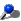
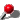
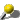

ACCADDE OGGI
- Aprile -
1 aprile -

1643: nasce Pirro Maria Gabbrielli
2 aprile - 1739: un Palio straordinario
2 aprile - 2006: l'incendio nella Curia Arcivescovile
3 aprile - 1923: nasce Giovanni Righi Parenti
4 aprile - 1780: una riforma all'Università
5 aprile - 1666: l'oratorio del Bruco
5 aprile - 1914: giuoco del calcio: Robur contro Libertas Firenze
6 aprile -
1962: tolti i posteggi da Piazza del Campo
7 aprile -
1773: uno spregiudicato truffatore napoletano
7 aprile -
1799: issato l'albero della libertà
8 aprile -
1655: la chiesa della Madonna del Rosario
9 aprile -
1431: Mariano da Siena in pellegrinaggio in Terra Santa
10 aprile -
1905: nasce la poetessa Dina Cucini
10 aprile -
1911: nasce Renzino, unico fantino rimasto imbattuto
11 aprile -
1638: colpiti da strane malattie
11 aprile -
1944: bombe su Siena
11 aprile -
1954: il passaggio della Coppa della Toscana
11 aprile -
1978: attentati incendiari all'Upim e a una Coop
12 aprile -
1717: Violante di Baviera entra in Siena
12 aprile -
2007: ci lascia Mons. Castellano Arcivescovo emerito di Siena
13 aprile -
1823: muore il Cardinale Antonio Felice Chigi Zondadari
13 aprile -
1935: Fondazione dell’Unione Corale Senese
14 aprile -
1785: nasce la Società di Esecutori di Pie Disposizioni
15 aprile -
1719: tre morti durante un'inumazione
15 aprile -
1771: una nuova pavimentazione per le vie di Siena
16 aprile -

1869: nasce Mastuchino
17 aprile - 1904: la Mostra dell'Antica Arte Senese
17 aprile - 1938: il Palio coi muli ad Ambaciara, la Siena d'Etiopia
18 aprile - 1777: tempesta di fulmini su Siena
19 aprile - 1677: nasce Sallustio Bandini
19 aprile - 1862: disastro ferroviario
20 aprile - 1761: demolizione del vecchio campanile di San Francesco
20 aprile - 1884: le bandiere del Palio del museo Stibbert di Firenze
21 aprile - 1555: Cosimo de' Medici e le truppe spagnole entrano a Siena
22 aprile - 1810: doti per il matrimonio di Napoleone
22 aprile - 1906: nasce l'attore Riccardo Billi
23 aprile - 1880: nasce Alfonso Menichetti detto Nappa
24 aprile - 1988: Savina Petrilli viene proclamata Beata
25 aprile - 1780: i costumi dei Priori del Concistoro
26 aprile -

2009: Bernardo Tolomei proclamato santo
27 aprile - 1655: un Palio alla tonda coi cavalli, ma senza Contrade
27 aprile - 1907: Ida Nomi Pesciolini presenta la "palla al cerchio"
27 aprile - 1927: l'apertura della linea Siena-Buonconvento-Montantico
28 aprile - 1767: muore Giuseppe Pannilini
28 aprile - 1914: la prima Milano-Roma motociclistica passa da Siena
29 aprile - 1380: muore Santa Caterina
29 aprile - 1775: un elefante a Siena
30 aprile - 1924: muore Ludovico Zdekauer
30 aprile - 1957: travolta in Piazza del Campo da un'auto che si è mossa da sola

 ACCADDE OGGI
ACCADDE OGGI

 1962: tolti i posteggi da Piazza del Campo
1962: tolti i posteggi da Piazza del Campo 1638: colpiti da strane malattie
1638: colpiti da strane malattie